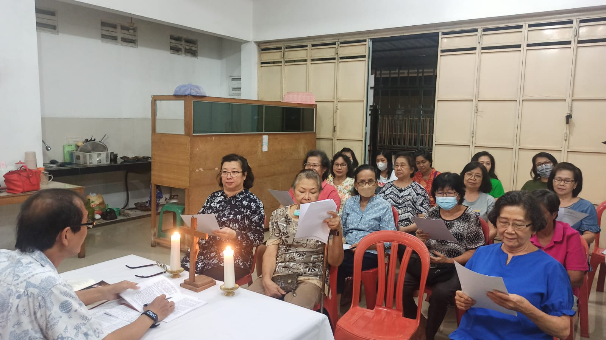
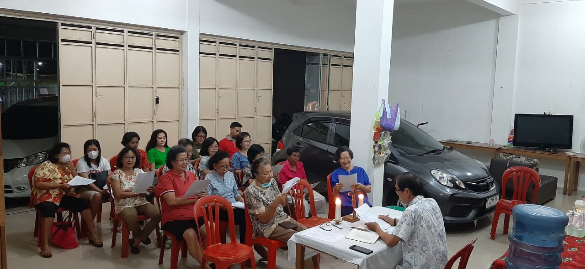
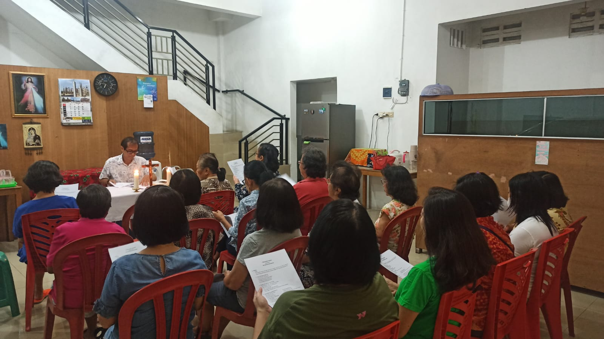

Pertemuan Kredo ke 1
|  |   |
Pertemuan Kredo pertama ini mengawali Program Paroki Mengajar.
Tujuan
Kita menyadari rencana indah Allah bagi manusia, bersyukur atas karunia akal budi dan kehendak bebas, sehingga secara tepat dimampukan menjawab panggilan Allah yang datang menjumpai kita.
Materi pembelajaran diambil dari bahan pendalaman Paroki Mengajar dan Kopendium Katekismus Gereja Katolik(KKGK) KKGK 1-32 KKGK lengkap
Rencana Allah untuk manusia
(2-5) Kemampuan manusia mengenal Allah (6-24) Allah datang menjumpai manusia (25-32) Jawaban Manusia kepada Allah
Syahadat Nicea Konstantinopel
Aku percaya akan satu Allah, Bapa yang mahakuasa, Pencipta langit dan bumi, dan segala sesuatu yang kelihatan dan tak kelihatan.
Dan akan satu Tuhan, Yesus Kristus, Putra Allah yang tunggal. Ia lahir dari Bapa sebelum segala abad.
Allah dari Allah, Terang dari Terang, Allah benar dari Allah benar. Ia dilahirkan, bukan dijadikan, sehakikat dengan Bapa; segala sesuatu dijadikan oleh-Nya.
Ia turun dari surga untuk kita manusia dan untuk keselamatan kita. Ia dikandung dari Roh Kudus, Dilahirkan oleh Perawan Maria, dan menjadi manusia.
Ia pun disalibkan untuk kita, waktu Pontius Pilatus; Ia menderita sampai wafat dan dimakamkan. Pada hari ketiga Ia bangkit menurut Kitab Suci. Ia naik ke surga, duduk di sisi Bapa.
Ia akan kembali dengan mulia, mengadili orang yang hidup dan yang mati; kerajaan-Nya takkan berakhir.
Aku percaya akan Roh Kudus, Ia Tuhan yang menghidupkan; Ia berasal dari Bapa dan Putra.
Yang serta Bapa dan Putra,disembah dan dimuliakan; Ia bersabda dengan perantaraan para nabi.
Aku percaya akan Gereja yang Satu, Kudus, Katolik dan Apostolik.
Aku mengakui satu pembaptisan akan penghapusan dosa.
Aku menantikan kebangkitan orang mati dan hidup di akhirat. Amin.
Inspirasi : 2 Kor 4:16-5:10 Jangan tawar hati, juga waktu menghadapi maut
4:16 Sebab itu kami tidak tawar hati, tetapi meskipun manusia lahiriah kami semakin merosot, namun manusia batiniah kami dibaharui dari sehari ke sehari.
4:17 Sebab penderitaan ringan yang sekarang ini, mengerjakan bagi kami kemuliaan kekal yang melebihi segala-galanya, jauh lebih besar dari pada penderitaan kami.
4:18 Sebab kami tidak memperhatikan yang kelihatan, melainkan yang tak kelihatan, karena yang kelihatan adalah sementara, sedangkan yang tak kelihatan adalah kekal.
5:1 Karena kami tahu, bahwa jika kemah tempat kediaman kita di bumi ini dibongkar, Allah telah menyediakan suatu tempat kediaman di sorga bagi kita, suatu tempat kediaman yang kekal, yang tidak dibuat oleh tangan manusia.
5:2 Selama kita di dalam kemah ini, kita mengeluh, karena kita rindu mengenakan tempat kediaman sorgawi di atas tempat kediaman kita yang sekarang ini,
5:3 sebab dengan demikian kita berpakaian dan tidak kedapatan telanjang.
5:4 Sebab selama masih diam di dalam kemah ini, kita mengeluh oleh beratnya tekanan, karena kita mau mengenakan pakaian yang baru itu tanpa menanggalkan yang lama, supaya yang fana itu ditelan oleh hidup.
5:5 Tetapi Allahlah yang justru mempersiapkan kita untuk hal itu dan yang mengaruniakan Roh, kepada kita sebagai jaminan segala sesuatu yang telah disediakan bagi kita.
5:6 Maka oleh karena itu hati kami senantiasa tabah, meskipun kami sadar, bahwa selama kami mendiami tubuh ini, kami masih jauh dari Tuhan,
5:7 sebab hidup kami ini adalah hidup karena percaya, bukan karena melihat
5:8 tetapi hati kami tabah, dan terlebih suka kami beralih dari tubuh ini untuk menetap pada Tuhan .
5:9 Sebab itu juga kami berusaha, baik kami diam di dalam tubuh ini, maupun kami diam di luarnya, supaya kami berkenan kepada-Nya.
5:10 Sebab kita semua harus menghadap takhta pengadilan Kristus, supaya setiap orang memperoleh apa yang patut diterimanya, sesuai dengan yang dilakukannya dalam hidupnya ini, baik ataupun jahat.
KKGK 1 Apa rencana Allah untuk manusia?
Allah yang sempurna dan penuh Bahagia, berencana membagikan kebaikan-Nya dengan menciptakan manusia agar manusia ikut ambil bagian dalam kebahagiaan-Nya.Dalam kepenuhan waktu ketika saatnya tiba Allah Bapa mengutus putranya sebagai penebus dan penyelamat manusia yang sudah jatuh ke dalam dosa memanggil semuanya ke dalam gerejanya dan melalui karya Roh Kudus mengangkat mereka sebagai anak-anaknya dan pewaris kebahagiaan abadi.
Ketika menciptakan manusia, Allah mengukir dalam hati kita Kerinduan untuk berjumpa dan tinggal di dalam dia. hanya dalam dia, kita mengalami kepenuhan dan kebahagiaan karena itu, menurut kodrat dan panggilannya, Manusia adalah makhluk religius yang mampu masuk ke dalam persekutuan dengan Allah sebagai asal dan tujuan alam semesta.
Dengan sabda dan karyanya, Allah mewahyukan diri dan rencananya melalui tiga tahap, yakni pada tahap awal melalui Adam dan Hawa, pada tahap selanjutnya melalui Abraham dan bangsa terpilih, dan pada tahap akhir, penuh dan definitif melalui dan dalam diri Yesus Kristus Sabda menjadi manusia. namun, gereja harus sedikit demi sedikit memahami maknanya yang lengkap selama berabad-abad.
Allah menghendaki agar manusia di selamatkan dan sampai pada pengetahuan akan kebenaran (1Tim 2:4) yaitu Yesus Kristus karena alasan inilah Kristus harus diwartakan kepada semua menurut Perintah Kristus, ” Pergilah dan ajarlah segala bangsa” (Mat 28:19). Dan ini diwariskan oleh tradisi apostolik.
Tradisi apostolik adalah pewarisan pesan Kristus baik dalam bentuk tulisan ( dalam kitab suci) maupun dalam bentuk lisan (=Tradisi). kitab suci, tradisi dan kuasa mengajar berhubungan erat satu sama lain dan saling melengkapi dalam memberikan sumbangan secara efektif baik keselamatan jiwa-jiwa di bawah naungan karya Roh Kudus.
Pembaharuan iman
Allah telah mewahyukan dirinya kepada manusia secara bertahap, sejak perjanjian lama sampai perjanjian baru dan kemudian diwariskan oleh Gereja dari satu generasi ke generasi berikutnya oleh karena wahyu Allah dapat memenuhi Kerinduan kita akan kebahagiaan, kebenaran, kebaikan, dan keindahan maka sudah seharusnya kita menanggapi pewahyuan ini dengan beriman.
Walaupun Iman merupakan tanggapan manusia, namun sisi lain dari iman adalah pemberian Allah yang diberikan pada saat baptisan. bantuan Allah ini membantu kita untuk menjawab panggilan Allah untuk menjadi anak-anak Allah dan mengambil bagian di dalam kehidupan Allah Tuhan membantu kita, agar kita mampu untuk menjalankan iman kita dan setia sampai pada akhirnya.